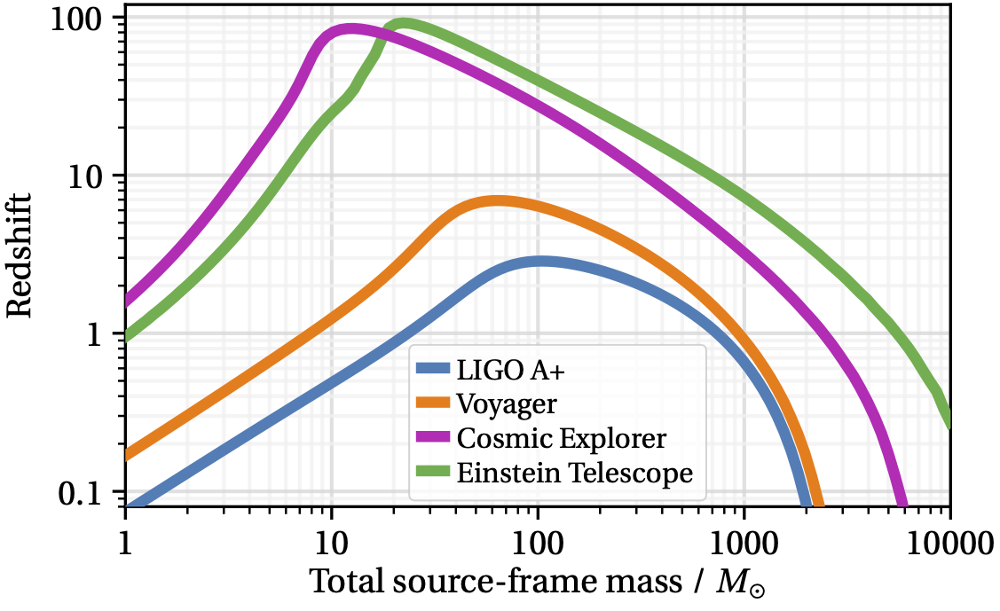
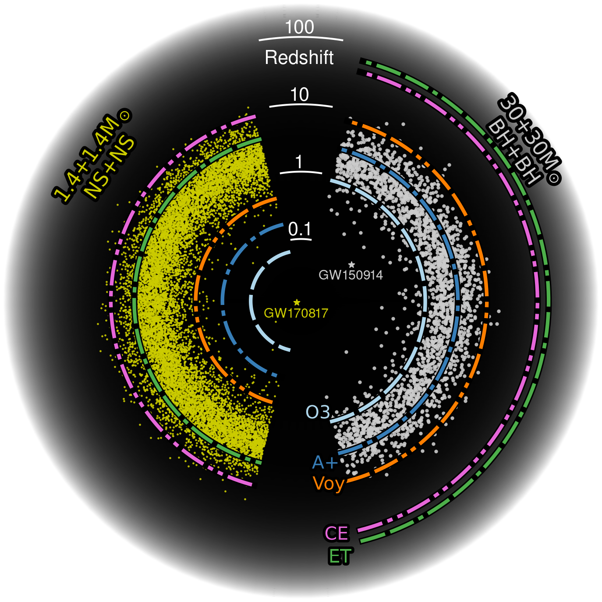

Astrophysical Sensitivity

Amplitude spectrum of the detector noise as a function of frequency for Cosmic Explorer (CE), the current (O3) and upgraded (A+) sensitivities of Advanced LIGO, LIGO Voyager, NEMO, and the Einstein Telescope. The latest Cosmic Explorer noise curves are provided in the CE DCC document T2000017. You can download ce_strain.zip, a zip file that contains the noise curves in plain text.
Maximum redshift (vertical axis) at which an equal-mass binary of given source-frame total mass (horizontal axis) can be observed with a signal-to-noise ratio of 8. Different curves represent different detectors. For binary neutron stars (total mass ~3 solar masses), CE will give access to redshifts larger than 1, where most of the mergers are expected to happen. For binary black holes, it will enable the exploration of redshifts of 10 and above, where mergers of black holes formed by either the first stellar population in the universe (Pop III stars) or by quantum fluctuations shortly after the Big Bang (primordial black holes) might be found. CE DCC document G2000035.
Astrophysical horizon of current and proposed future detectors for compact binary systems. The dotted lines indicate the detection horizons, expressed in cosmological redshift, for Advanced LIGO during its third observing run (O3), Advanced LIGO at its anticipated sensitivity for the fifth observing run (A+), a possible cryogenic upgrade of LIGO called Voyager (Voy), the Einstein Telescope (ET), and Cosmic Explorer (CE). The yellow and white dots are for a simulated population of binary neutron star mergers and binary black hole mergers, respectively, following [Madau and Dickinson, Annual Review of Astronomy and Astrophysics 2014 52:1, 415-48] with a characteristic binary merger time of 100 million years. CE DCC document T2000037.